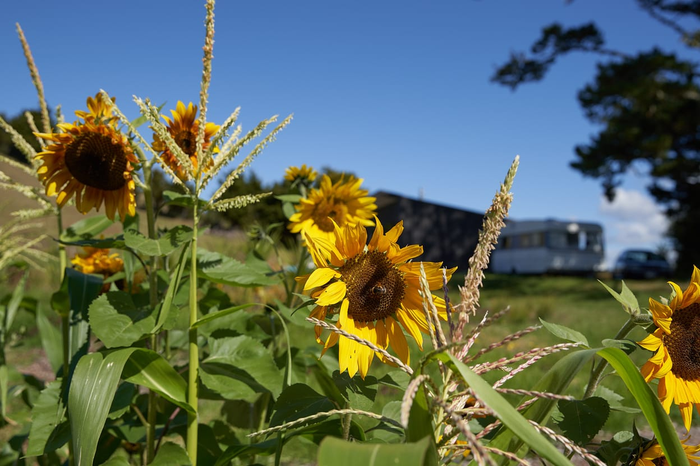
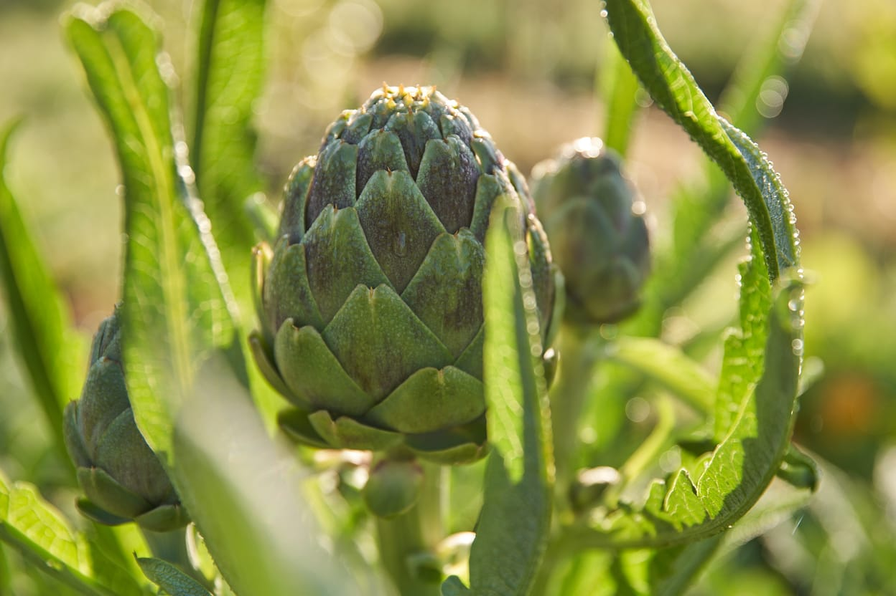
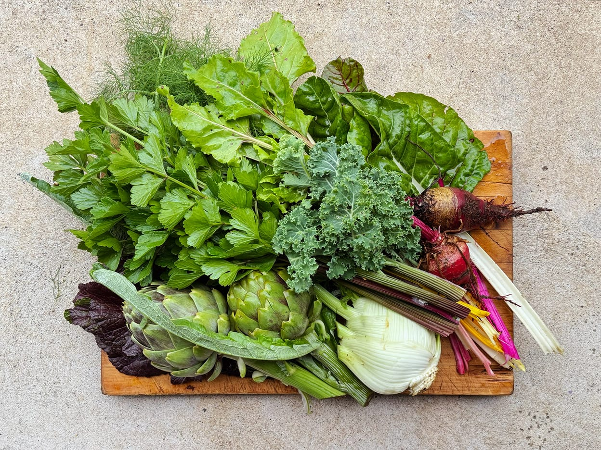
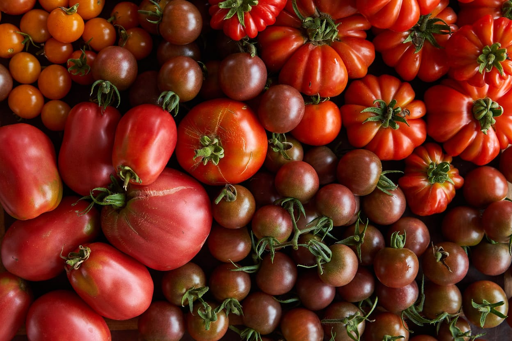

Pala Produce: Our Story
Pala Produce is a fledgling Far North farm. We — Emma and Aaron McLean — sowed the first seeds and started planting trees at the end of 2021. Emma has 25 years experience in natural health with a passion for nutrition; and Aaron has spent his life immersed in food, first in restaurants and then as a food photographer and publisher with a passion for growing and local food systems.
Our Mission: Regenerating the Land
Our long term focus is on Syntropic Agroforestry, meaning ‘the path of life’ - we are regenerating the land we inhabit through natural succession, nurturing more and more life to generate increased biodiversity and abundance, in the form of a productive multi-strata food forest which will leave a native forest in its wake.
In the space between our young fruit tree rows, we have been busy preparing the soil to grow nutritious delicious more-than-organic veggies for our community.
Our commitment to More-Than-Organic Practices
More than organic? Predominantly heirloom and organic seed. No pesticides. No fungicides. No synthetic fertilisers. We are too young to be certified organic, but we guarantee we use only regenerative organic practices and certified organic inputs.
We believe that if you know your farmer, you know your food, and we’d love to know those who eat what we grow, so, with the help of our friend and collaborator Dylan Forde, we are establishing a seasonal CSA veggie box subscription, starting this December.

What is CSA? Community Supported Agriculture
CSA stands for Community Supported Agriculture, a relationship between people who care how and where their food is grown, and people like us who love to grow it. This connection between us and a small committed group of customers means we can welcome visits to the farm, which enables you, our community, to verify that we are practising what we preach.
By making a financial commitment to a seasonal subscription, not only do you receive a weekly share of what we grow, you help make our dream of growing food in this way viable, and you also enable us to care for the rest of our diverse little farm; including the retirement and native restoration of the stream valley which runs through the land and is already home to kiwi, weka and a small patch of established bush.
Seasonal Subscriptions and Payment Options
Being a CSA shareholder is a commitment to the full growing season. We will be starting with three CSA seasons in a year - December-February, March-May, June-August, with a break late winter into spring to prepare for the seasons ahead.
In a traditional CSA you would ‘pay up front’ for a share of what the farm produces, helping us with our expenses for the season ahead - this is our preferred model. However we understand that not everybody has the money to pay for food in advance—and we want our food to be accessible—so you’re also welcome to ‘pay as you go’. We also encourage anybody who wants to ‘pay it forward’ to somebody who they think would benefit from a weekly dose of healthy local food. If you’re away during the season you’re welcome to gift your share to a friend.
What to Expect in Your Veggie Box
Each box comes with a delicious diverse seasonal salad mix and a selection of other vegetables. It is important to remember that this is small-scale hands on production, a veggie box from us will have old favorites mixed with new flavors you’ll be excited to discover, but we’re not aspiring to the perfect pumpkin or exactly the same veggies each week, so we ask you to embrace the adventure, to relish in our successes as well as the odd crooked carrot.
Flavor and Nutrition: The Soil Connection
Did you know that flavor is an indication of nutrition and a result of growing plants in healthy living soil? By nurturing our soil, our soil nurtures our plants, and we get to offer you delicious nutrient dense food. Not only that, we’re all passionate cooks, so we’re excited to grow varieties not available in the supermarket or even at the farmers market, and we look forward to sharing information, recipes, and tips for how to cook and enjoy our produce.
Price and Pickup
Our veggie boxes will be $40pw, $35 if you pay for the season up front. We would love you to pick up from the farm, but we are 10 minutes from Kerikeri, so will also enable pickups once a week from a location to be confirmed in town. We will only be offering 15 boxes to start while we find our feet, so get in touch quickly to secure a spot.